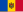
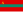

List of sovereign states
{kind=link}
The following is a list providing an overview of sovereign states around the world with information on their status and recognition of their sovereignty.
The 205 listed states can be divided into three categories based on membership within the United Nations System: 193 UN member states,[1] two UN General Assembly non-member observer states, and ten other states. The sovereignty dispute column indicates states having undisputed sovereignty (188 states, of which there are 187 UN member states and one UN General Assembly non-member observer state), states having disputed sovereignty (15 states, of which there are six UN member states, one UN General Assembly non-member observer state, and eight de facto states), and states having a special political status (two states, both in free association with New Zealand).
Compiling a list such as this can be a complicated and controversial process, as there is no definition that is binding on all the members of the community of nations concerning the criteria for statehood. For more information on the criteria used to determine the contents of this list, please see the criteria for inclusion section below. The list is intended to include entities that have been recognised as having de facto status as sovereign states, and inclusion should not be seen as an endorsement of any specific claim to statehood in legal terms.
Criteria for inclusion
The dominant customary international law standard of statehood is the declarative theory of statehood, which was codified by the Montevideo Convention of 1933. The Convention defines the state as a person of international law if it "possess[es] the following qualifications: (a) a permanent population; (b) a defined territory; (c) government; and (d) a capacity to enter into relations with the other states" so long as it was not "obtained by force whether this consists in the employment of arms, in threatening diplomatic representations, or in any other effective coercive measure".[2]
Debate exists on the degree to which recognition should be included as a criterion of statehood. The declarative theory of statehood argues that statehood is purely objective and recognition of a state by other states is irrelevant. On the other end of the spectrum, the constitutive theory of statehood defines a state as a person under international law only if it is recognised as sovereign by other states. For the purposes of this list, included are all polities that consider themselves sovereign states (through a declaration of independence or some other means) and either:
- are often regarded as satisfying the declarative theory of statehood, or
- are recognised as a sovereign state by at least one UN member state
In some cases, there is a divergence of opinion over the interpretation of the first point, and whether an entity satisfies it is disputed. Unique political entities which fail to meet the classification of a sovereign state are considered proto-states.[3][4]
On the basis of the above criteria, this list includes the following 205 entities:[a][b]
- 203 states recognised by at least one UN member state
- 1 state that satisfies the declarative theory of statehood and is recognised only by non-UN member states
- 1 state that satisfies the declarative theory of statehood and is not recognised by any other state
The table includes bullets in the right-hand column representing entities that are either not sovereign states or have a close association to another sovereign state. It also includes subnational areas where the sovereignty of the titular state is limited by an international agreement. Taken together, these include:
- Entities that are in a free association relationship with another state
- 2 entities controlled by Pakistan which are neither sovereign states, dependent territories, nor part of another state: Azad Kashmir and Gilgit-Baltistan
- Dependent territories of another state, as well as areas that exhibit many characteristics of dependent territories according to the dependent territory page
- Subnational entities created by international agreements
List of states
UN member states and General Assembly observer states
|
"Membership within the UN System" column legend |
"Sovereignty dispute" column legend Undisputed sovereignty
Disputed sovereignty
|
| Common and formal names | Membership within the UN System[c] | Sovereignty dispute[d] | Further information on status and recognition of sovereignty[f] |
|---|---|---|---|
| Afghanistan | UN member state | None | The de facto ruling government, the |
| UN member state | None | ||
| UN member state | None | ||
| UN member state | None | Andorra is a co-principality in which the office of head of state is jointly held ex officio by the French president and the bishop of the Roman Catholic diocese of Urgell,[7] who himself is appointed with approval from the Holy See. | |
| UN member state | None | ||
| UN member state | None | Antigua and Barbuda is a Commonwealth realm[g] with one autonomous region, Barbuda.[8][h] | |
| UN member state | None | Argentina is a federation of 23 provinces and one autonomous city.[j] | |
| UN member state | Not recognised by Pakistan. | Armenia is not recognised by Pakistan due to the dispute over Artsakh.[10][11][12] | |
| UN member state | None | Australia is a Commonwealth realm[g] and a federation of both states and territories. There are six states, three internal territories, six external territories and one claimed Antarctic external territory. The external territories of Australia are: | |
| UN member state | None | Member of the European Union.[e] Austria is a federation of nine states. | |
| UN member state | None | Azerbaijan contains one autonomous region, Nakhchivan.[h] | |
| UN member state | None | The Bahamas is a Commonwealth realm.[g] | |
| UN member state | None | ||
| UN member state | None | ||
| UN member state | None | ||
| UN member state | None | Many states rescinded their recognition of President Alexander Lukashenko following the disputed 2020 election. Lithuania currently recognises Sviatlana Tsikhanouskaya's Coordination Council as the legitimate government of Belarus.[15] | |
| UN member state | None | Member of the EU.[e] Belgium is a federation of three linguistic communities and three regions. | |
| UN member state | None | Belize is a Commonwealth realm.[g] | |
| UN member state | None | ||
| UN member state | None | ||
| UN member state | None | ||
| UN member state | None | Bosnia and Herzegovina has two constituent entities:
and Brčko District, a self-governing administrative district.[16] | |
| UN member state | None | ||
| UN member state | None | Brazil is a federation of 26 states and one federal district. | |
| UN member state | None | ||
| UN member state | None | Member of the EU.[e] | |
| UN member state | None | ||
| UN member state | None | ||
| UN member state | None | ||
| UN member state | None | ||
| UN member state | None | Canada is a Commonwealth realm[g] and a federation of ten provinces and three territories. | |
| UN member state | None | ||
| UN member state | None | ||
| UN member state | None | ||
| UN member state | None | Chile has one special territory, Easter Island.[n] | |
| UN member state | Partially unrecognised. Claimed by the Republic of China | China contains five autonomous regions, Guangxi, Inner Mongolia, Ningxia, Tibet, and Xinjiang.[h] Additionally, it has sovereignty over the Special Administrative Regions of:
China claims, but does not control, Taiwan, which is governed by a rival administration (the Republic of China) that claims all of China as its territory.[p] China is not recognised by 11 UN member states and Vatican City, which, with the exception of Bhutan, all recognise the Republic of China (Taiwan) instead.[q] | |
| UN member state | None | ||
| UN member state | None | Comoros is a federation of three islands.[r] | |
| UN member state | None | ||
| UN member state | None | ||
| UN member state | None | ||
| UN member state | None | Member of the EU.[e] | |
| UN member state | None | ||
| UN member state | Not recognised by Turkey[19] | Member of the EU.[e] The northeastern part of the island is the de facto state of Northern Cyprus.
Cyprus is not recognised by Turkey due to the Cyprus dispute, with Turkey recognising Northern Cyprus. | |
| UN member state | None | Member of the EU.[e] | |
| Denmark – Kingdom of Denmark | UN member state | None | Member of the EU.[e] The Kingdom of Denmark includes 2 self-governing territories:
The metropolitan territory of Denmark, the Faroe Islands and Greenland form the three constituent countries of the Kingdom.[v] The Kingdom of Denmark as a whole is a member of the EU, but EU law (in most cases) does not apply to the Faroe Islands and Greenland. See Greenland and the European Union, and Faroe Islands and the European Union for more information.[20][21] |
| UN member state | None | ||
| UN member state | None | ||
| UN member state | None | ||
| UN member state | None | ||
| UN member state | None | ||
| UN member state | None | ||
| UN member state | None | ||
| UN member state | None | ||
| UN member state | None | ||
| UN member state | None | Member of the EU.[e] | |
| UN member state | None | ||
| UN member state | None | Ethiopia is a federation of eleven regions and two chartered cities. | |
| UN member state | None | Fiji contains one autonomous region, Rotuma.[h][22][23] | |
| UN member state | None | Member of the EU.[e] | |
| UN member state | None | Member of the EU.[e] France contains five overseas regions/departments; French Guiana, Guadeloupe, Martinique, Mayotte, and Réunion. France also includes the overseas territories of: | |
| UN member state | None | ||
| UN member state | None | ||
| UN member state | None | Georgia contains two autonomous republics, Adjara and Abkhazia.[h] In Abkhazia and South Ossetia, de facto states have been formed. | |
| UN member state | None | Member of the EU.[e] Germany is a federation of 16 states. | |
| UN member state | None | ||
| UN member state | None | Member of the EU.[e] Greece contains one autonomous area, Mount Athos.[25] | |
| UN member state | None | Grenada is a Commonwealth realm.[g] | |
| UN member state | None | ||
| UN member state | None | ||
| UN member state | None | ||
| UN member state | None | ||
| UN member state | None | ||
| UN member state | None | ||
| UN member state | None | Member of the EU.[e] | |
| UN member state | None | ||
| UN member state | None | India is a federation of 28 states and eight union territories. | |
| UN member state | None | Indonesia has nine autonomous provinces, Aceh, Jakarta, Central Papua, Highland Papua, Papua, South Papua, Southwest Papua, West Papua, and Yogyakarta.[h] | |
| UN member state | None | ||
| UN member state | None | Iraq is a federation[r][29] of 19 governorates, four of which make up the autonomous Kurdistan Region.[h] | |
| UN member state | None | Member of the EU.[e] | |
| UN member state | Partially unrecognised | Israel exerts strong control over the territory claimed by Palestine. It has annexed East Jerusalem,[31] an act not recognised by the international community.[32] Israel has varying levels of control over the rest of the West Bank, and although it ended its permanent civilian or military presence in the Gaza Strip, it is still considered to be the occupying power under international law.[33][34][35][36]
Israel is not recognised as a state by 28 UN members and the Sahrawi Arab Democratic Republic. The Palestine Liberation Organization, recognised by a majority of UN member states as the representative of the Palestinian people, recognised Israel in 1993. | |
| UN member state | None | Member of the EU.[e] Italy has 5 autonomous regions, Aosta Valley, Friuli-Venezia Giulia, Sardinia, Sicily and Trentino-Alto Adige/Südtirol.[h] | |
| UN member state | None | ||
| UN member state | None | Jamaica is a Commonwealth realm.[g] | |
| UN member state | None | ||
| UN member state | None | ||
| UN member state | None | ||
| UN member state | None | ||
| UN member state | None | ||
| UN member state | None | ||
| UN member state | None | ||
| UN member state | None | ||
| UN member state | None | Member of the EU.[e] | |
| UN member state | None | ||
| UN member state | None | ||
| UN member state | None | ||
| UN member state | None | ||
| UN member state | None | ||
| UN member state | None | Member of the EU.[e] | |
| UN member state | None | Member of the EU.[e] | |
| UN member state | None | ||
| UN member state | None | ||
| UN member state | None | Malaysia is a federation of 13 states and three federal territories. | |
| UN member state | None | ||
| UN member state | None | ||
| UN member state | None | Member of the EU.[e] | |
| UN member state | None | Under Compact of Free Association with the United States. | |
| UN member state | None | ||
| UN member state | None | Mauritius has an autonomous island, Rodrigues.[h] | |
| UN member state | None | Mexico is a federation of 31 states and one autonomous city. | |
| UN member state | None | Under Compact of Free Association with the United States. The Federated States of Micronesia is a federation of four states. | |
|  Moldova – Republic of Moldova | UN member state | None | Moldova has the autonomous regions of Gagauzia and the Left Bank of the Dniester. The latter and a city Bender (Tighina), is under the de facto control of Transnistria. |
| UN member state | None | ||
| UN member state | None | ||
| UN member state | None | ||
| UN member state | None | Part of the Moroccan-claimed Western Sahara is controlled by the partially recognised Sahrawi Arab Democratic Republic. | |
| UN member state | None | ||
| UN member state | None | Wa State is a de facto autonomous state within Myanmar. The United Nations has not recognised the de facto ruling government of Myanmar, the State Administration Council.[6] | |
| UN member state | None | ||
| UN member state | None | ||
| UN member state | None | Nepal is a federation composed of 7 provinces. | |
| UN member state | None | Member of the EU.[e] The Kingdom of the Netherlands includes four areas with substantial autonomy:
The Metropolitan Netherlands, Aruba, Curaçao and Sint Maarten form the four constituent countries of the Kingdom. Three overseas parts of the Netherlands (Bonaire, Saba and Sint Eustatius) are special municipalities of the metropolitan Netherlands.[af] The Kingdom of the Netherlands as a whole is a member of the EU, but EU law only wholly applies to parts within Europe. | |
| UN member state | None | New Zealand is a Commonwealth realm,[g] and has one dependent territory and one claimed Antarctic dependent territory:
The New Zealand Government acts for the entire Realm of New Zealand in all international contexts, which has responsibilities for (but no rights of control over) two freely associated states: The Cook Islands and Niue have diplomatic relations with 49 and 18 UN members respectively.[37][38] They have full treaty-making capacity in the UN,[39] and are members of some UN specialized agencies. | |
| UN member state | None | Nicaragua contains two autonomous regions, Atlántico Sur and Atlántico Norte.[h] | |
| UN member state | None | ||
| UN member state | None | Nigeria is a federation of 36 states and one federal territory. | |
| UN member state | Claimed by South Korea | North Korea is not recognised by one UN member, South Korea, which claims to be the sole legitimate government of Korea.[40] | |
| UN member state | None | ||
| UN member state | None | Norway has two unincorporated areas in Europe:
Norway has one dependent territory and two claimed Antarctic dependent territories in the Southern Hemisphere: | |
| UN member state | None | ||
| UN member state | None | Pakistan is a federation of four provinces and one capital territory. Pakistan exercises control over certain portions of Kashmir, but has not officially annexed any of it,[41][42] instead regarding it as a disputed territory.[43][44] The portions that it controls are divided into two territories, administered separately from Pakistan proper:
Azad Kashmir describes itself as a "self-governing state under Pakistani control", while Gilgit-Baltistan is described in its governance order as a group of "areas" with self-government.[45][46][47] These territories are not usually regarded as sovereign, as they do not fulfil the criteria set out by the declarative theory of statehood (for example, their current laws do not allow them to engage independently in relations with other states). Several state functions of these territories (such as foreign affairs and defense) are performed by Pakistan.[46][48][49] | |
| UN member state | None | Under Compact of Free Association with the United States. | |
| UN General Assembly observer state; member of two UN specialized agencies | Partially unrecognised. | The State of Palestine, declared in 1988, is not recognised as a state by Israel but has received diplomatic recognition from 145 states.[50] The proclaimed state has no agreed territorial borders, or effective control over much of the territory that it proclaimed.[51] The Palestinian National Authority is an interim administrative body formed as a result of the Oslo Accords that exercises limited autonomous jurisdiction within the Palestinian territories. In foreign relations, Palestine is represented by the Palestine Liberation Organization.[52] The State of Palestine is a member state of UNESCO,[53] UNIDO and other international organizations.[54] | |
| UN member state | None | ||
| UN member state | None | Papua New Guinea is a Commonwealth realm[g] with one autonomous region, Bougainville.[h] | |
| UN member state | None | ||
| UN member state | None | ||
| UN member state | None | The Philippines contains one autonomous region, Bangsamoro.[h] | |
| UN member state | None | Member of the EU.[e] | |
| UN member state | None | Member of the EU.[e] Portugal contains two autonomous regions, the Azores and Madeira.[h] | |
| UN member state | None | ||
| UN member state | None | Member of the EU.[e] | |
| UN member state | None | Russia is a federation of 83 internationally recognised federal subjects (republics, oblasts, krais, autonomous okrugs, federal cities, and an autonomous oblast). Several of the federal subjects are ethnic republics.[h] | |
| UN member state | None | ||
| UN member state | None | Saint Kitts and Nevis is a Commonwealth realm[g] and is a federation[r] of two islands, St. Kitts and Nevis. | |
| UN member state | None | Saint Lucia is a Commonwealth realm.[g] | |
| UN member state | None | Saint Vincent and the Grenadines is a Commonwealth realm.[g] | |
| UN member state | None | ||
| UN member state | None | ||
| UN member state | None | São Tomé and Príncipe contains one autonomous province, Príncipe.[h] | |
| UN member state | None | ||
| UN member state | None | ||
| UN member state | None | Serbia contains two autonomous regions, Vojvodina and Kosovo and Metohija.[h] The latter is under the de facto control of Kosovo. | |
| UN member state | None | ||
| UN member state | None | ||
| UN member state | None | ||
| UN member state | None | Member of the EU.[e] | |
| UN member state | None | Member of the EU.[e] | |
| UN member state | None | Solomon Islands is a Commonwealth realm.[g] | |
| UN member state | None | Somalia is a federation of six states. Two, Puntland and Galmudug, have self-declared autonomy, while one, Somaliland, is de facto independent. | |
| UN member state | None | ||
| UN member state | Claimed by North Korea | South Korea has one autonomous region, Jeju Province.[h][55]
South Korea is not recognised by North Korea, which claims to be the sole legitimate government of Korea. | |
| UN member state | None | South Sudan is a federation of 10 states and three administrative areas.
| |
| UN member state | None | Member of the EU.[e] Spain is divided into 17 autonomous communities and two special autonomous cities.[h][ah] | |
| UN member state | None | ||
| UN member state | None | Sudan is a federation of 18 states.
| |
| UN member state | None | ||
| UN member state | None | Member of the EU.[e] | |
| UN member state | None | Switzerland is a federation of 26 cantons. | |
| UN member state | None | The Syrian National Coalition, which is recognised as the legitimate representative of the Syrian people by 20 UN members, has established an interim government to rule rebel controlled territory during the Syrian civil war.
Syria has one self-declared autonomous region: Rojava. | |
| UN member state | None | Tajikistan contains one autonomous region, Gorno-Badakhshan Autonomous Province.[h] | |
| UN member state | None | Tanzania contains one autonomous region, Zanzibar.[h] | |
| UN member state | None | ||
| UN member state | None | ||
| UN member state | None | ||
| UN member state | None | Trinidad and Tobago contains one autonomous region, Tobago.[h] | |
| UN member state | None | ||
| UN member state | None | ||
| UN member state | None | ||
| UN member state | None | Tuvalu is a Commonwealth realm.[g] | |
| UN member state | None | ||
| UN member state | None | Ukraine contains one autonomous region, the Autonomous Republic of Crimea,[h] which is under the control of Russia. Seven other areas of Ukraine are under full or partial Russian control, including Donetsk, Kharkiv, Kherson, Luhansk, Mykolaiv, Zaporizhzhia oblasts and Sevastopol. | |
| UN member state | None | The United Arab Emirates is a federation of seven emirates. | |
| UN member state | None | The United Kingdom is a Commonwealth realm[g] consisting of four constituent countries; England, Northern Ireland, Scotland, and Wales. The United Kingdom has the following 13 overseas territories and one claimed Antarctic dependent territory:
The British monarch also has direct sovereignty over three self-governing Crown Dependencies: | |
| UN member state | None | The United States is a federation of 50 states, one federal district, and one incorporated territory. Additionally, the Federal government of the United States has sovereignty over 13 unincorporated territories. Of these territories, the following five are inhabited possessions:
It also has sovereignty over several uninhabited territories:
It also disputes sovereignty over the following two territories: Three sovereign states have become associated states of the United States under the Compact of Free Association:
| |
| UN member state | None | ||
| UN member state | None | Uzbekistan contains one autonomous region, Karakalpakstan.[h] | |
| UN member state | None | ||
| UN General Assembly observer state under the designation of "Holy See"; member of three UN specialized agencies | None | Administered by the Holy See, a sovereign entity with diplomatic relations to 183 states. This figure consists of 180 UN member states, the Cook Islands, the Republic of China (Taiwan), and the State of Palestine.[58] In addition, the European Union and the Sovereign Military Order of Malta maintain diplomatic relations with the Holy See. The Holy See is a member of three UN specialized agencies (ITU, UPU, and WIPO) and the IAEA, as well as being a permanent observer of the UN (in the category of "Non-member State")[52] and multiple other UN System organizations. The Vatican City is governed by officials appointed by the Pope, who is the Bishop of the Diocese of Rome and ex officio sovereign of Vatican City. | |
| UN member state | None | Venezuela is a federation of 23 states, one capital district, and federal dependencies. | |
| UN member state | None | ||
| UN member state | None | ||
| UN member state | None | ||
| UN member state | None |
Other states
|
"Membership within the UN System" column legend Member state of a UN Specialized Agency
No membership
|
"Sovereignty dispute" column legend Undisputed sovereignty
Disputed sovereignty
|
| Common and formal names | Membership within the UN System[ak] | Sovereignty dispute[al] | Further information on status and recognition of sovereignty[am] |
|---|---|---|---|
| No membership | Claimed by Georgia | Recognised by Russia, Nicaragua, Nauru, Syria, Venezuela, South Ossetia, and Transnistria.[59] Claimed in whole by Georgia as the Autonomous Republic of Abkhazia. | |
| Member of eight UN specialized agencies | None (See political status) |
A state in free association with New Zealand, the Cook Islands maintains diplomatic relations with 52 other states and is recognized as a sovereign state by a number of them. The Cook Islands is a member of multiple UN agencies with full treaty making capacity.[39] It shares a head of state with New Zealand as well as having shared citizenship. | |
| Member of two UN specialized agencies | Claimed by Serbia | Pursuant to United Nations Security Council Resolution 1244, Kosovo was placed under the administration of the United Nations Interim Administration Mission in Kosovo in 1999.[60] Kosovo declared independence in 2008, and it has received diplomatic recognition from 114 UN member states and the Republic of China, while 18 of those states have recognised Kosovo only to later withdraw their recognition.[61] Serbia continues to maintain its sovereignty claim over Kosovo. Other UN member states and non UN member states continue to recognise Serbian sovereignty or have taken no position on the question. Kosovo is a member of the International Monetary Fund and the World Bank Group. The Republic of Kosovo has de facto control over most of the territory, with limited control in North Kosovo. | |
| Member of five UN specialized agencies | None (See political status) |
A state in free association with New Zealand, Niue maintains diplomatic relations with 20 other states and is recognized as a sovereign state by a number of them. Niue is a member of multiple UN agencies with full treaty making capacity.[39] It shares a head of state with New Zealand as well as having shared citizenship. | |
| No membership | Claimed by the Republic of Cyprus | Recognised only by Turkey. Under the name "Turkish Cypriot State", it is an observer state of the Organisation of Islamic Cooperation and the Economic Cooperation Organization. Northern Cyprus is claimed in whole by the Republic of Cyprus.[62] | |
| No membership | Claimed by Morocco | Recognised at some stage by 84 UN member states, 38 of which have since withdrawn or frozen their recognition. It is a founding member of the African Union and the Asian–African Strategic Partnership formed at the 2005 Asian–African Conference. The territories under its control, the so-called Free Zone, are claimed in whole by Morocco as part of its Southern Provinces. In turn, the Sahrawi Arab Democratic Republic claims the part of Western Sahara to the west of the Moroccan Wall controlled by Morocco. Its government resides in exile in Tindouf, Algeria. | |
| Somaliland – Republic of Somaliland | No membership | Claimed by Somalia | A de facto independent state,[63][64][65][66][67][excessive citations] not formally diplomatically recognised by any other state;[an] claimed in whole by the Federal Republic of Somalia.[68] |
| No membership | Claimed by Georgia | A de facto independent state,[69] recognised by Russia, Nicaragua, Nauru, Syria, Venezuela, Abkhazia, and Transnistria. Claimed in whole by Georgia as the Provisional Administration of South Ossetia.[70] | |
| Was a UN member state until 1971, now no membership | Partially unrecognised. Claimed by the People's Republic of China | A state competing (nominally) for recognition with the People's Republic of China (PRC) as the government of China since 1949. The Republic of China (ROC) controls the island of Taiwan, Penghu, Kinmen, the Matsu Islands, and Pratas Island, as well as Taiping Island and Zhongzhou Reef of the Spratly Islands, and has not renounced claims over its annexed territories on the mainland.[71] The ROC is recognised by 11 UN member states as well as Vatican City, none of which recognise the PRC. Additionally, one UN member (Bhutan) has refrained from recognising either the ROC or the PRC.
In addition to these relations, the ROC also maintains unofficial relations[72] with 58 UN member states, one self-declared state (Somaliland), three territories (Guam, Hong Kong, and Macau), and the European Union via its representative offices and consulates under the One China principle. Taiwan has the 31st-largest diplomatic network in the world with 110 offices.[73] The territory of the ROC is claimed in whole by the PRC.[p] The ROC participates in international organizations under a variety of pseudonyms, most commonly "Chinese Taipei" and in the WTO it has full membership under the designation of "Separate Customs Territory of Taiwan, Penghu, Kinmen and Matsu". The ROC was a founding member of the UN and enjoyed membership from 1945 to 1971, with veto power in the UN Security Council. See China and the United Nations. | |
|  Transnistria – Pridnestrovian Moldavian Republic | No membership | Claimed by Moldova | A de facto independent state,[63] recognised only by Abkhazia and South Ossetia.[59] Claimed in whole by Moldova.[74] |
See also
- Armorial of sovereign states
- Gallery of sovereign state flags
- ISO 3166-1
- List of adjectival and demonymic forms for countries and nations
- List of administrative divisions by country
- List of associated states
- List of condominiums (international law)
- List of countries and dependencies and their capitals in native languages
- List of countries and dependencies by area
- List of countries and dependencies by population
- List of countries by United Nations geoscheme
- List of country-name etymologies
- List of dependent territories
- List of international rankings
- List of ISO 3166 country codes
- List of micronations
- List of national capitals
- List of rebel groups that control territory
- List of states with limited recognition
- List of territorial disputes
- List of territories governed by the United Nations
- Lists of political entities by century
- Lists of state leaders by century
- Member states of the United Nations
- Sovereign state
- Template:Clickable world map
- Terra nullius
- United Nations list of non-self-governing territories
Notes
- ^ The following bullets are grouped according to the availability of sources for the two criteria ((a) and/or (b)). This arrangement is not intended to reflect the relative importance of the two theories. Additional details are discussed in the state's individual entries.
- ^ The Sovereign Military Order of Malta is not included, as despite being a sovereign entity it lacks territory and does not claim statehood. Entities considered to be micronations are not included. It is often up to debate whether a micronation truly controls its claimed territory. Also omitted from this list are all uncontacted peoples, either who live in societies that cannot be defined as states or whose statuses as such are not definitively known.
- ^ This column indicates whether or not a state is a member of the United Nations.[1] It also indicates which non-member states participate in the United Nations System through membership in the International Atomic Energy Agency or one of the specialized agencies of the United Nations. All United Nations members belong to at least one specialized agency and are parties to the statute of the International Court of Justice.
- ^ This column indicates whether or not a state is the subject of a major sovereignty dispute. Only states whose entire sovereignty is disputed by another state are listed.
- ^ a b c d e f g h i j k l m n o p q r s t u v w x y z aa ab ac The member states of the European Union have transferred part of their sovereignty in the form of legislative, executive, and judicial powers to the institutions of the EU, which is an example of supranational union. The EU has 27 member states.[13]
- ^ Information is included on:
- The extent to which a state's sovereignty is recognised internationally. More information can be found at List of states with limited recognition,
- Membership in the European Union,[e] where applicable,
- Any dependencies, if applicable, which are generally not part of the territory of the sovereign state,
- federal structure of the state, where applicable. More information can be found at Federated state,
- Any autonomous areas inside the territory of the sovereign state,
- Any situations where one person is the Head of State of more than one state,
- Any governments in exile recognised by at least one state.
- ^ a b c d e f g h i j k l m n o Commonwealth realm refers to any member state of the Commonwealth of Nations whose head of state is King Charles III. Each realm is separate, independent, and a sovereign state; see relationship between the realms.
- ^ a b c d e f g h i j k l m n o p q r s t u v w x For more information on divisions with a high degree of autonomy, see List of autonomous areas by country.
- ^ The Argentine Constitution (Art. 35) recognises the following denominations for Argentina: "United Provinces of the Río de la Plata", "Argentine Republic" and "Argentine Confederation"; furthermore, it establishes the usage of "Argentine Nation" for purposes of legislation.
- ^ Argentina's claimed Antarctic territory of Argentine Antarctica (Antártida Argentina) is one of five constituent departments of the province Tierra del Fuego.[9]
- ^ Sometimes officially "Azerbaijan Republic"
- ^ The legal name for Canada is the sole word; an officially sanctioned, though disused, name is Dominion of Canada (which includes its legal title); see: Name of Canada, Dominion.
- ^ The government of Cape Verde declared "Cabo Verde" to be the official English name of the country in 2013.[17]
- ^ Chile's claimed Antarctic territory of the Chilean Antarctic (Antártica Chilena) is a commune of the Antártica Chilena Province of the Magallanes Region.
- ^ a b The People's Republic of China (PRC) is commonly referred to as "China", while the Republic of China (ROC) is commonly referred to as "Taiwan". The ROC is also occasionally known diplomatically as Chinese Taipei, or by other alternative names.
- ^ a b In 1949, the Republic of China government led by the Kuomintang (KMT) lost the Chinese Civil War to the Chinese Communist Party (CCP) and set up a provisional capital in Taipei. The CCP established the PRC. As such, the political status of the ROC and legal status of Taiwan (alongside the territories under ROC jurisdiction) are in dispute. In 1971, the United Nations gave the China seat to the PRC. In the view of the United Nations, no member of the organization withdrew as a consequence of this but the ROC representatives declared that they were withdrawing. Most states recognise the PRC to be the sole legitimate representative of all China, and the UN classifies Taiwan as "Taiwan, Province of China". The ROC has de facto relations with most sovereign states. A significant political movement within Taiwan advocates Taiwan independence.
- ^ See also Dates of establishment of diplomatic relations with the People's Republic of China and Foreign relations of China.
- ^ a b c More information on more or less federal structures can be found at a List of federations.[18]
- ^ Also known as Congo-Kinshasa. Formerly referred to as Zaire, its official name from 1971 to 1997.
- ^ Also known as Congo-Brazzaville.
- ^ An official short name in English has been adopted by the Czech government, "Czechia". This variant remains uncommon, but has been adopted by several companies and organizations including the United Nations. See Name of the Czech Republic.
- ^ The designation "Denmark" can refer either to Metropolitan Denmark or to the entire Danish Realm (e.g. in international organisations).
- ^ The government of East Timor uses "Timor-Leste" as the official English name of the country.
- ^ Formerly referred to as the Kingdom of Swaziland, its official name until 2018.
- ^ Åland was demilitarized by the Treaty of Paris in 1856, which was later affirmed by the League of Nations in 1921, and in a somewhat different context reaffirmed in the treaty on Finland's admission to the European Union in 1995.
- ^ France's claimed Antarctic territory of Adélie Land (Terre Adélie) is one of five constituent districts of the French Southern and Antarctic Lands.
- ^ Also known as Guinea-Conakry.
- ^ While sometimes referred to as the "Republic of Iceland"[26][27] and sometimes its counterpart Lýðveldið Ísland in Icelandic, the official name of the country is simply "Iceland".[28] One example of the former is the name of the Constitution of Iceland, which in Icelandic is Stjórnarskrá lýðveldisins Íslands and literally means "the Constitution of the republic of Iceland". However, in this usage "republic" is not capitalized.
- ^ "Ireland" is the official name of the country in English. "Republic of Ireland" (the official description in English) and "Éire" (the official name in Irish) have sometimes been used unofficially to distinguish the state from the larger island of Ireland, however, this is officially deprecated.[30] See names of the Irish state.
- ^ The government of Ivory Coast uses "Côte d'Ivoire" as the official English name of the country.
- ^ The country's official name of Myanmar, adopted in 1989, has been mixed and controversial, with the former name Burma still being used in many cases. See Names of Myanmar.
- ^ The designation "the Netherlands" can refer either to the Metropolitan Netherlands or to the entire Kingdom (e.g. in international organisations).
- ^ Formerly known constitutionally as the "Republic of Macedonia" from 1991 to 2019 and under the international designation of "the former Yugoslav Republic of Macedonia" (FYROM) from 1993 to 2019 due to the Macedonia naming dispute with Greece. Following the Prespa agreement going into effect in February 2019, the country was renamed "North Macedonia".
- ^ Spain holds several small overseas territories scattered along the Mediterranean coast bordering Morocco, known as the plazas de soberanía.
- ^ Formerly known as Ceylon until 1972.
- ^ Formerly the "Republic of Turkey". In 2023, the United Nations recognized "Türkiye" as the official English name of the country after a request made by the Turkish government.
- ^ This column indicates whether or not a state is a member of the United Nations.[1] It also indicates which non-member states participate in the United Nations System through membership in the International Atomic Energy Agency or one of the specialized agencies of the United Nations. All United Nations members belong to at least one specialized agency and are parties to the statute of the International Court of Justice.
- ^ This column indicates whether or not a state is the subject of a major sovereignty dispute. Only states whose entire sovereignty is disputed by another state are listed.
- ^ Information is included on:
- The extent to which a state's sovereignty is recognised internationally. More information can be found at List of states with limited recognition,
- Membership in the European Union,[e] where applicable,
- Any dependencies, if applicable, which are generally not part of the territory of the sovereign state,
- federal structure of the state, where applicable. More information can be found at Federated state,
- Any autonomous areas inside the territory of the sovereign state,
- Any situations where one person is the Head of State of more than one state,
- Any governments in exile recognised by at least one state.
- ^ Though de facto recognized by Taiwan.
References
- ^ a b c "Member States | United Nations". United Nations. Archived from the original on 1 March 2023. Retrieved 7 March 2023.
- ^ Hersch Lauterpacht (2012). Recognition in International Law. Cambridge University Press. p. xxxv. ISBN 9781107609433.
- ^ Hahn, Gordon (2002). Russia's Revolution from Above, 1985–2000: Reform, Transition, and Revolution in the Fall of the Soviet Communist Regime. New Brunswick: Transaction Publishers. p. 527. ISBN 978-0765800497.
- ^ Griffiths, Ryan (2016). Age of Secession: The International and Domestic Determinants of State Birth. Cambridge: Cambridge University Press. pp. 85, 213–242. ISBN 978-1107161627.
- ^ "Taliban announce new government for Afghanistan". BBC News. 7 September 2021.
- ^ a b "U.N. Seats Denied, for Now, to Afghanistan's Taliban and Myanmar's Junta". The New York Times. 1 December 2021.
- ^ "Andorra country profile". BBC News. Archived from the original on 15 February 2009. Retrieved 8 November 2011.
- ^ Government of Antigua and Barbuda. "Chapter 44: The Barbuda Local Government Act" (PDF). Laws of Antigua and Barbuda. Archived from the original (PDF) on 6 July 2011. Retrieved 10 November 2010.
- ^ "Tierra del Fuego and Antarctica". Patagonia-Argentina. Retrieved 12 September 2020.
- ^ "Pakistan Worldview, Report 21, Visit to Azerbaijan" (PDF). Senate of Pakistan Foreign Relations Committee. 2008. Archived from the original (PDF) on 19 February 2009.
- ^ "Nilufer Bakhtiyar: "For Azerbaijan Pakistan does not recognise Armenia as a country"". Today.az. 13 September 2006. Archived from the original on 13 August 2011. Retrieved 11 June 2023.
- ^ "Pakistan the only country not recognising Armenia – envoy". News.Az. 5 February 2014. Archived from the original on 23 February 2014. Retrieved 17 February 2014.
We are the only country not recognising Armenia as a state.
- ^ "Country profiles". The European Union. Retrieved 11 June 2023.
- ^ "Bahamas, The | The Commonwealth". thecommonwealth.org. 15 August 2013. Archived from the original on 9 March 2018. Retrieved 12 March 2018.
- ^ Ministry of Foreign Affairs of the Republic of Lithuania (23 September 2020). "Lithuanian Foreign Ministry's statement on the situation in Belarus". Retrieved 14 March 2022.
- ^ Stjepanović, Dejan (2015). "Dual Substate Citizenship as Institutional Innovation: The Case of Bosnia's Brčko District". Nationalism and Ethnic Politics. 21 (4): 382–383. doi:10.1080/13537113.2015.1095043. eISSN 1557-2986. ISSN 1353-7113. OCLC 5927465455. S2CID 146578107.
- ^ Tanya Basu (14 December 2013). "Cape Verde Gets New Name: 5 Things to Know About How Maps Change". National Geographic. Archived from the original on 20 October 2018. Retrieved 8 October 2018.
- ^ Constitution of Comoros, Art. 1.
- ^ Andreas S. Kakouris (9 July 2010). "Cyprus is not at peace with Turkey". CNN. Archived from the original on 18 May 2014. Retrieved 17 May 2014.
Turkey stands alone in violation of the will of the international community. It is the only country to recognise the "TRNC" and is the only country that does not recognise the Republic of Cyprus and its government.
- ^ "Home Rule Act of the Faroe Islands : No. 137 of March 23, 1948". Statsministeriat. Copenhagen. Archived from the original on 10 September 2015. Retrieved 20 May 2015.
- ^ "The Greenland Home Rule Act : Act No. 577 of 29 November 1978". Statsministeriat. Copenhagen. Archived from the original on 14 February 2014. Retrieved 20 May 2014.
- ^ "Rotuma Act". Laws of Fiji (1978 ed.). Suva, Fiji: Government of Fiji. 1927. Archived from the original on 21 June 2010. Retrieved 10 July 2010.
- ^ Government of Fiji, Office of the Prime Minister (1978). "Chapter 122: Rotuma Act". Laws of Fiji. University of the South Pacific. Archived from the original on 1 March 2011. Retrieved 10 November 2010.
- ^ "The Gambia profile". BBC News. 14 February 2018. Archived from the original on 11 March 2018. Retrieved 12 March 2018.
- ^ Constitution of Greece, Art. 105.
- ^ "Iceland - Culture, History, & People". Archived from the original on 18 July 2011. Retrieved 2 February 2016.
- ^ "Working Paper No. 54 : UNGEGN list of country names (Prepared by the United Nations Group of Experts on Geographical Names)" (PDF). unstats.un.org. Vienna. May 2011. Archived (PDF) from the original on 11 August 2011. Retrieved 2 February 2016.
- ^ "Hvert er formlegt heiti landsins okkar?". Archived from the original on 22 July 2011. Retrieved 2 February 2016.
- ^ "Iraqi constitution" (PDF). Archived from the original (PDF) on 18 May 2016.
- ^ Daly, Mary E. (January 2007). "The Irish Free State/Éire/Republic of Ireland/Ireland: "A Country by Any Other Name"?". Journal of British Studies. 46 (1). Cambridge University Press on behalf of The North American Conference on British Studies: 72–90. doi:10.1086/508399. ISSN 0021-9371. JSTOR 10.1086/508399.
- ^ "Basic Law: Jerusalem, Capital of Israel". www.knesset.gov.il. Archived from the original on 5 September 2014. Retrieved 7 July 2014.
- ^ "Disputes: International". CIA World Factbook. Archived from the original on 14 May 2011. Retrieved 8 November 2011.
- ^ Bell, Abraham (28 January 2008). "International Law and Gaza: The Assault on Israel's Right to Self-Defense". Jerusalem Issue Brief, Vol. 7, No. 29. Jerusalem Center for Public Affairs. Archived from the original on 21 June 2010. Retrieved 16 July 2010.
- ^ Salih, Zak M. (17 November 2005). "Panelists Disagree Over Gaza's Occupation Status". University of Virginia School of Law. Archived from the original on 3 March 2016. Retrieved 16 July 2010.
- ^ "Israel: 'Disengagement' Will Not End Gaza Occupation". Human Rights Watch. 29 October 2004. Archived from the original on 1 November 2008. Retrieved 16 July 2010.
- ^ Sanger, Andrew (2011). "The Contemporary Law of Blockade and the Gaza Freedom Flotilla". In M.N. Schmitt; Louise Arimatsu; Tim McCormack (eds.). Yearbook of International Humanitarian Law - 2010. Vol. 13. Springer Science & Business Media. p. 429. doi:10.1007/978-90-6704-811-8_14. ISBN 978-90-6704-811-8.
It is this direct external control over Gaza and indirect control over life within Gaza that has led the United Nations, the UN General Assembly, the UN Fact Finding Mission to Gaza, International human rights organisations, US Government websites, the UK Foreign and Commonwealth Office and a significant number of legal commentators, to reject the argument that Gaza is no longer occupied.
* Scobbie, Iain (2012). Elizabeth Wilmshurst (ed.). International Law and the Classification of Conflicts. Oxford University Press. p. 295. ISBN 978-0-19-965775-9.Even after the accession to power of Hamas, Israel's claim that it no longer occupies Gaza has not been accepted by UN bodies, most States, nor the majority of academic commentators because of its exclusive control of its border with Gaza and crossing points including the effective control it exerted over the Rafah crossing until at least May 2011, its control of Gaza's maritime zones and airspace which constitute what Aronson terms the 'security envelope' around Gaza, as well as its ability to intervene forcibly at will in Gaza.
* Gawerc, Michelle (2012). Prefiguring Peace: Israeli-Palestinian Peacebuilding Partnerships. Lexington Books. p. 44. ISBN 9780739166109.In other words, while Israel maintained that its occupation of Gaza ended with its unilateral disengagement Palestinians – as well as many human right organizations and international bodies – argued that Gaza was by all intents and purposes still occupied.
- ^ Federal Foreign Office of Germany (November 2009). "Beziehungen zu Deutschland". Government of Germany. Archived from the original on 23 July 2010. Retrieved 16 July 2010. For more information, see Foreign relations of the Cook Islands.
- ^ Republic of Nauru Permanent Mission to the United Nations. "Foreign Affairs". United Nations. Archived from the original on 4 October 2014. Retrieved 16 July 2010.
- ^ a b c "Article 102, Repertory of Practice of United Nations Organs, Supplement No. 8, Volume VI (1989–1994)" (PDF). untreaty.un.org. Archived from the original (PDF) on April 3, 2012. Retrieved July 15, 2011.
- ^ "Treaty on Basic Relations between Japan and the Republic of Korea". ioc.u-tokyo.ac.jp. 22 June 1965. Archived from the original on 13 March 2009. Retrieved 27 October 2008.
- ^ Constitution of Pakistan, Art. 1.
- ^ Aslam, Tasnim (11 December 2006). "Pakistan Does Not Claim Kashmir As An Integral Part..." Outlook India. The Outlook Group. Archived from the original on 13 December 2011. Retrieved 27 February 2011.
- ^ Williams, Kristen P. (2001). Despite nationalist conflicts: theory and practice of maintaining world peace. Greenwood Publishing Group. pp. 154–155. ISBN 978-0-275-96934-9.
- ^ Pruthi, R.K. (2001). An Encyclopaedic Survey Of Global Terrorism In 21st Century. Anmol Publications Pvt. Ltd. pp. 120–121. ISBN 978-81-261-1091-9.
- ^ "Azad Kashmir Day". Archived from the original on 12 August 2014. Retrieved 28 July 2014.
- ^ a b "To Be Published In The Next Issue Of The" (PDF). Archived (PDF) from the original on 5 September 2014. Retrieved 28 July 2014.
- ^ "AJ&K History". Archived from the original on 6 January 2018. Retrieved 6 January 2018.
- ^ Lansford, Tom (8 April 2014). Political Handbook of the World 2014. SAGE Publications. ISBN 9781483333281. Retrieved 5 October 2014.
- ^ "The Azad Jammu And Kashmir Interim Constitution Act, 1974" (PDF). Archived from the original (PDF) on 13 October 2013. Retrieved 28 July 2014.
- ^ Palestine Liberation Organization. "Road For Palestinian Statehood: Recognition and Admission". Negotiations Affairs Department. Archived from the original on August 18, 2011. Retrieved July 28, 2011.
- ^ See the following on statehood criteria:
- Mendes, Errol (30 March 2010). "Statehood and Palestine for the purposes of Article 12 (3) of the ICC Statute" (PDF). pp. 28, 33. Archived (PDF) from the original on 31 August 2011. Retrieved 17 April 2011: "...the Palestinian State also meets the traditional criteria under the Montevideo Convention..."; "...the fact that a majority of states have recognised Palestine as a State should easily fulfil the requisite state practice".
- McKinney, Kathryn M. (1994). "The Legal Effects of the Israeli-PLO Declaration ofPrinciples: Steps Toward Statehood for Palestine". Seattle University Law Review. 18 (93). Seattle University: 97. Archived from the original on 22 July 2011. Retrieved 17 April 2011: "It is possible, however, to argue for Palestinian statehood based on the constitutive theory".
- McDonald, Avril (Spring 2009). "Operation Cast Lead: Drawing the Battle Lines of the Legal Dispute". Human Rights Brief. 25. Washington College of Law, Center for Human Rights and Humanitarian Law. Archived from the original on 29 March 2012. Retrieved 17 April 2011: "Whether one applies the criteria of statehood set out in the Montevideo Convention or the more widely accepted constitutive theory of statehood, Palestine might be considered a state."
- ^ a b "Non-member States and Entities". United Nations. 29 February 2008. Archived from the original on 9 May 2009. Retrieved 30 August 2010.
- ^ United Nations Educational, Scientific and Cultural Organization. "Arab States: Palestine". United Nations. Archived from the original on 4 January 2012. Retrieved 3 December 2011.
- ^ "The Palestinians: Background and U.S. Relations" (PDF). 18 March 2021. pp. 40–41.
- ^ Keun Min. "Greetings". Jeju Special Self-Governing Province. Archived from the original on 2 May 2013. Retrieved 10 November 2010.
- ^ a b "Statement from UNISFA on the recent spate of attacks in Abyei". UNmissions.org. 18 October 2017. Archived from the original on 13 February 2018. Retrieved 12 February 2018.
- ^ a b "Abyei Administration Area Changes Name". Gurtong.net. 29 July 2015. Archived from the original on 13 February 2018. Retrieved 12 February 2018.
- ^ "Bilateral relations of the Holy See". Holy See website. Archived from the original on 9 July 2014. Retrieved 5 June 2012.
- ^ a b Абхазия, Южная Осетия и Приднестровье признали независимость друг друга и призвали всех к этому же (in Russian). newsru.com. 17 November 2006. Archived from the original on 16 April 2009. Retrieved 5 June 2011.
- ^ "United Nations Interim Administration Mission in Kosovo". UN. Archived from the original on 25 December 2014. Retrieved 8 January 2015.
- ^ ""Sijera Leone je 18. država koja je povukla priznanje tzv. Kosova"".
- ^ "Cyprus", The World Factbook, Central Intelligence Agency, 7 June 2023, retrieved 11 June 2023
- ^ a b Ker-Lindsay, James (2012). The Foreign Policy of Counter Secession: Preventing the Recognition of Contested States. Oxford University Press. p. 53. ISBN 9780199698394. Archived from the original on 9 October 2013. Retrieved 24 September 2013.
In addition to the four cases of contested statehood described above, there are three other territories that have unilaterally declared independence and are generally regarded as having met the Montevideo criteria for statehood but have not been recognised by any states: Transnistria, Nagorny Karabakh, and Somaliland.
- ^ Kreuter, Aaron (2010). "Self-Determination, Sovereignty, and the Failure of States: Somaliland and the Case for Justified Secession" (PDF). Minnesota Journal of International Law. 19 (2). University of Minnesota Law School: 380–381. Archived from the original (PDF) on 27 September 2013. Retrieved 24 September 2013.
Considering each of these factors, Somaliland has a colorable argument that it meets the theoretical requirements of statehood. ... On these bases, Somaliland appears to have a strong claim to statehood.
- ^ International Crisis Group (23 May 2006). "Somaliland: Time for African Union leadership" (PDF). The Africa Report (110). Groupe Jeune Afrique: 10–13. Archived from the original (PDF) on 20 July 2011. Retrieved 19 April 2011.
- ^ Mesfin, Berouk (September 2009). "The political development of Somaliland and its conflict with Puntland" (PDF). ISS Paper (200). Institute for Security Studies: 8. Archived from the original (PDF) on 23 November 2011. Retrieved 19 April 2011.
- ^ Arieff, Alexis. "de facto Statehood? The Strange Case of Somaliland" (PDF). Yale Journal of International Affairs (Spring/Summer 2008). International Affairs Council at Yale: 1–79. Archived (PDF) from the original on 13 December 2011. Retrieved 17 April 2011.
- ^ "Somaliland profile". BBC News. 14 December 2017. Archived from the original on 23 April 2017. Retrieved 27 January 2018.
- ^ Jansen, Dinah (2009). "The Conflict between Self-Determination and Territorial Integrity: the South Ossetian Paradigm". Geopolitics Vs. Global Governance: Reinterpreting International Security. Centre for Foreign Policy Studies, University of Dalhousie: 222–242. ISBN 978-1-896440-61-3. Archived from the original on 19 August 2018. Retrieved 14 December 2017.
- ^ "Russia condemned for recognising rebel regions". CNN.com. Cable News Network. 26 August 2008. Archived from the original on 29 August 2008. Retrieved 26 August 2008.
- ^ "Ma refers to China as ROC territory in magazine interview". Taipei Times. 8 October 2008. Archived from the original on 3 June 2009. Retrieved 13 October 2008.
- ^ 中華民國國情介紹. 2.16.886.101.20003. 22 March 2017.
- ^ van der Wees, Gerrit. "Is Taiwan's International Space Expanding or Contracting?". thediplomat.com. The Diplomat. Retrieved 16 December 2021.
- ^ "Transnistria profile – Overview". BBC News. 20 November 2022. Retrieved 11 June 2023.
Bibliography
- Bissio, Roberto Remo, ed. (1995). The World: A Third World Guide: 1995/96. Montevideo: Instituto del Tercer Mundo. ISBN 978-0-85598-291-1. OCLC 476299738.
- "Countries or areas, codes and abbreviations". Statistics Division, United Nations. 1 April 2010.
- Davis, Tim (19 February 2009). "World Countries and States List". TimDavis.com.au.
- "Geographic Names" (PDF). Department of Public Information, Cartographic Section, United Nations. 7 September 2000.
- "ISO 3166-1 Country names and code elements". International Organization for Standardization. 2010.
- "List of countries, territories and currencies". Publications Office of the European Union. 4 May 2010.
- "The World Factbook". United States: Central Intelligence Agency. 2010. Archived from the original on 7 June 2007.
- World of Information (Firm), and International Chamber of Commerce (2003). Middle East Review 2003/04: The Economic and Business Report (27th ed.). London: Kogan Page. p. 161. ISBN 978-0-7494-4066-4. OCLC 51992589.
- Slayden, Greg. "The Countries of the World". PeakBagger.com. Retrieved 24 July 2020.
{kind=link}